Contenido
Una pieza que podamos terminar y comprobar
Elegid una necesidad del centro y una propuesta del catálogo, en un equipo nuevo. Explicad cómo se resuelve hoy, qué falta y con qué frecuencia se usaría la pieza. Las miniaturas son ideas para interpretar, no planos listos para fabricar. Medid el objeto real y completad las cotas.
El proyecto básico se diseña en clase. Elegid una pieza sencilla compatible con el tiempo, material y cola disponibles. Una ampliación necesita autorización por su carga de trabajo y pruebas; no se termina obligatoriamente en casa. Las impresiones se organizarán fuera del horario de clase cuando haya perfil validado y turno confirmado.
Catálogo ilustrado
Placa táctil de puerta
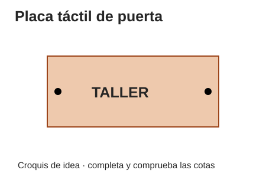
Básica. Una base y un relieve; permite reutilizar el llavero. No equivale a señal braille certificada.
Dimensiones esenciales: Base X=80 × Y=40 × Z=4 mm; texto hasta 20 mm de altura en XY y relieve de 1,5 en Z sobre la base (altura total 5,5 mm); agujeros para fijación medidos.
Prueba: Leer a la distancia prevista, reconocer el relieve y comprobar fijación y bordes sin aristas.
Portacables de mesa
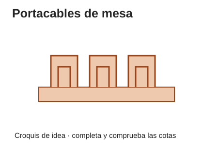
Básica. Repite huecos y separa fabricación de base y guía. Puede hacerse con base manual.
Dimensiones esenciales: Base 80 × 40 mm; tres canales dimensionados tras medir los cables.
Prueba: Introducir y retirar cada cable sin dañar su funda; comprobar que no se cae en uso.
Soporte de móvil
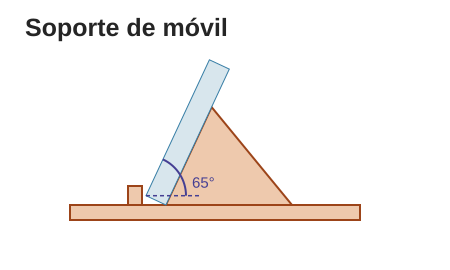
Básica con prueba. Exige comprobar estabilidad y encaje, además de modelar.
Dimensiones esenciales: Base orientativa 80 × 60; ranura según grosor real, estudiar 8–12 mm; inclinación inicial 65° respecto a horizontal.
Prueba: Usar primero una maqueta del mismo tamaño y masa; probar posiciones sin exponer el dispositivo a caída.
Organizador de rotuladores
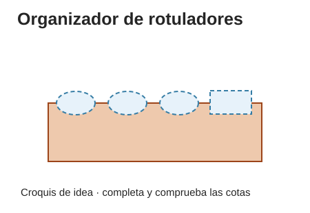
Media. Varios huecos y estabilidad del conjunto.
Dimensiones esenciales: Base inicial 100 × 80; cuatro huecos según diámetro medido, candidato Ø20; alojamiento del borrador medido.
Prueba: Cargar con los útiles reales sobre mesa, comprobar vuelco y extracción; fijación mural sólo autorizada.
Caja de tapones
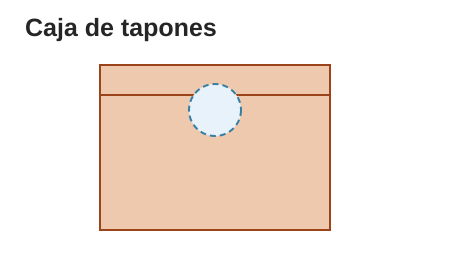
Media, preferente manual. El volumen requerido aumenta tamaño y tiempo: cuerpo manual y tapa diseñada pueden ser más viables.
Dimensiones esenciales: Interior de ejemplo 100 × 100 × 50 = 500 cm³; boca candidata Ø35. Añadir paredes al exterior.
Prueba: Medir volumen interior, paso de tapones y apertura de vaciado; comprobar bordes.
Adaptador de agarre
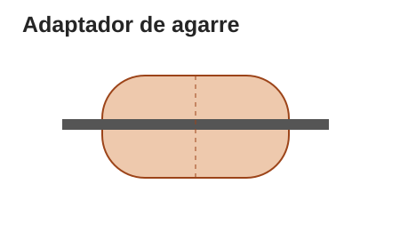
Media. Dos mitades, unión y comodidad; adaptar al objeto y persona usuaria.
Dimensiones esenciales: Longitud inicial 60; diámetro exterior candidato 25; canal ajustado al utensilio medido.
Prueba: Ensayo de agarre sin puntas ni calor; observar deslizamiento y presión, sin prometer uso sanitario.
Soporte de tablet plegable
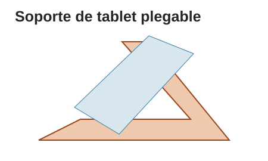
Ampliación. Dos posiciones, bisagra y carga; necesita más ajuste y prueba que una base fija.
Dimensiones esenciales: Base orientativa 160 × 120; eje y holguras determinados con probeta.
Prueba: Maqueta de masa equivalente; estabilidad, cierre y atrapamientos con supervisión.
Dispensador de tornillería
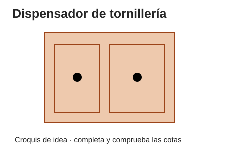
Ampliación. Varias piezas, deslizamiento y etiquetado; cuerpo manual posible.
Dimensiones esenciales: Cuerpo candidato 120 × 80 × 60; dos cajones; probar holgura 0,3/0,5 por lado.
Prueba: Abrir cajones cargados sin atasco ni vuelco; comprobar separaciones y tiradores.
Atril de lectura
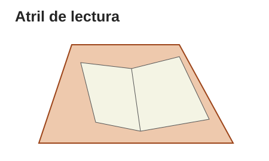
Ampliación. Piezas de distintos materiales, uniones y dos posiciones.
Dimensiones esenciales: Base candidata 200 × 150 de contrachapado; respaldo y tope según libro.
Prueba: Maqueta equivalente al libro; apertura/cierre, estabilidad y control de dedos.
Señalética accesible
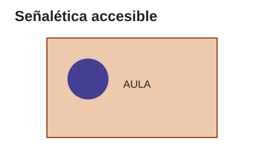
Media. Exige comprobar lectura y montaje, no sólo añadir relieve.
Dimensiones esenciales: Placa inicial 100 × 70; texto y pictograma con contraste; altura de colocación decidida tras prueba.
Prueba: Reconocimiento del mensaje a distancia y alcance previstos; no fijar una altura universal.
Gancho de mochila
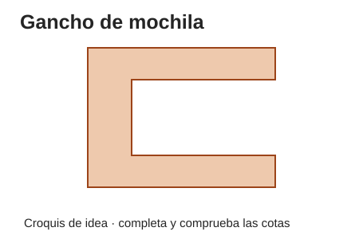
Ampliación supervisada. Carga, concentración de esfuerzos y ensayo; no es una pieza inicial sencilla.
Dimensiones esenciales: Probeta C: 50 × 45,5, abertura 25,5 para tablero nominal 25, espesor 10, brazo libre 40.
Prueba: Requisito de estudio: 5 kg. Sólo ensayo controlado descrito debajo; no colgar una mochila para darlo por aprobado.
Brazo articulado para móvil
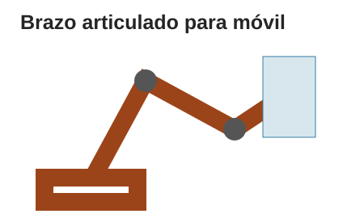
Ampliación supervisada. Tres o más piezas, palancas, apriete y riesgo de caída; requiere tiempo y pruebas adicionales.
Dimensiones esenciales: Dos brazos candidatos de 100; uniones M4 con espacio para tuerca; pinza adaptada al tablero.
Prueba: Sustituto del móvil de masa equivalente, recogida protegida y revisión de uniones; no uso sobre personas.
Qué es común y qué cambia con la vía
| Común | Fabricación digital | Fabricación manual |
|---|---|---|
| Necesidad, boceto acotado, diseño CAD y plan de prueba. | STL de las piezas a imprimir y orientación razonada. | Modelo CAD de referencia, croquis o plantilla 1:1, despiece y medidas del material. |
| Medidas, material, proceso, función, iteración y foto de objeto. | Perfil y versión; capturas de primera capa, interior y soporte; archivo de máquina sólo validado. | Sujeción, herramientas, marcas, cortes, uniones y medidas antes/después; fotografías de esos pasos. |
| Ficha y presentación; trabajo propio de cada persona. | Acabado manual demostrado de la pieza impresa. | Ensayo del producto manual. No se inventan parámetros de impresión ni G-code. |
| CAD y laminado se aprenden en las prácticas comunes. | La simulación no acredita haber operado una impresora. | Si falta oportunidad de practicar una destreza, el docente la organiza por separado; no se da por realizada. |
Del boceto a la prueba
Una versión inicial sirve para aprender qué funciona y qué cambiar. La ficha se rellena mientras sucede.
- En clase, elegid función, medidas y tres requisitos. Haced boceto y seleccionad la vía con el docente según turnos y material.
- Construid la v1 durante el tiempo de aula; dos personas alternan modelado y comprobación. El resto prepara documentación y proceso; después rotad.
- Comprobad geometría y medidas. Digital: simulación o laminado con perfil validado. Manual: despiece, plantilla a escala y fijación demostrada.
- Fabricad sólo con las autorizaciones y turnos previstos. Si no hay máquina disponible, trabajad en la alternativa acordada; el tiempo de espera no se traslada a deberes.
- Aplicad el plan de prueba. Registrad requisito, procedimiento, resultado observado, decisión y cambio. Un fallo bien descrito permite mejorar; ocultarlo no.
- Entregad la foto, modelo y registro en «Pieza final (modelo 3D + foto)». Para la vía manual, incluid el plano/despiece y las evidencias de taller; el modelo digital representa el diseño, no una impresión realizada.
Resultado esperado: Una pieza o prototipo documentado con resultados reales y límites expresos.
Comprueba: Se distingue lo fabricado de lo simulado y lo ensayado de lo previsto.
Error frecuente: Escribir «funciona y aguanta» sin indicar qué prueba, con qué carga y qué observaste.
Ensayo del gancho: 5 kg es un requisito por comprobar
Sólo lo prepara y dirige el docente cuando disponga de montaje y recogida seguros. No es una certificación de carga de uso. El gancho no sostiene personas, objetos frágiles ni cargas sobre una zona de paso.
- Identificar la probeta: geometría, dimensiones reales, material, orientación, perfil, parámetros, fecha de fabricación y cualquier defecto. Medir el tablero real y comprobar su sujeción y la del banco.
- El docente prepara el banco a poca altura, con un recipiente de recogida y barrera que eviten impactos y acceso a la caída. Nadie pone manos o pies debajo ni se asoma frente a la pieza. Si no puede garantizar ese montaje, no se ensaya.
- Aplicar masas conocidas y registradas progresivamente, por ejemplo 0,5; 1; 2; 3; 4 y 5 kg, sin golpes, mediante un sistema que permita cargar desde fuera de la zona de caída. La masa total incluye recipiente y accesorios. Mantener cada escalón 60 s; registrar flecha, giro, deslizamiento, fisuras o ruido. Detener ante cualquier anomalía.
- Descargar y medir la deformación residual. Para esta prueba didáctica se propone aceptar el escalón sólo si no hay grietas, pérdida de fijación ni deslizamiento, y la deformación residual es menor o igual que 0,5 mm, medida con un método de resolución adecuada. El docente confirma antes si ese umbral y montaje son pertinentes.
- Escribir el resultado limitado: «Esta probeta soportó X kg durante Y s en este montaje» o «se detuvo a X por…». Superar 5 kg durante 60 s no demuestra durabilidad, fluencia, resistencia a golpes ni seguridad para una mochila en uso diario. El uso con carga requiere decisión adicional del responsable.
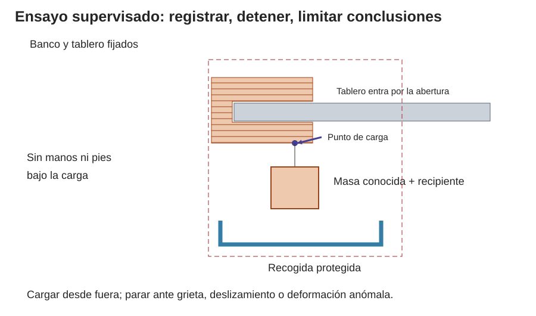
Entregas y comunicación
En equipo: pieza_final.stl, pieza_final.jpg, enlace al diseño y texto de prueba (qué, cómo, resultado y cambio). En la vía manual, el STL se conserva como evidencia de diseño común; el plano/despiece y las fotografías muestran la fabricación manual. ficha_tecnica.pdf se entrega en «Ficha técnica abierta». No añadáis datos personales a imágenes ni diseños públicos.
Preparad una presentación de dos minutos: necesidad, una decisión técnica, resultado de prueba y licencia. Repartid la palabra y usad lenguaje preciso e inclusivo. Lo que no se ha ensayado se dice, sin prometer que aguanta.